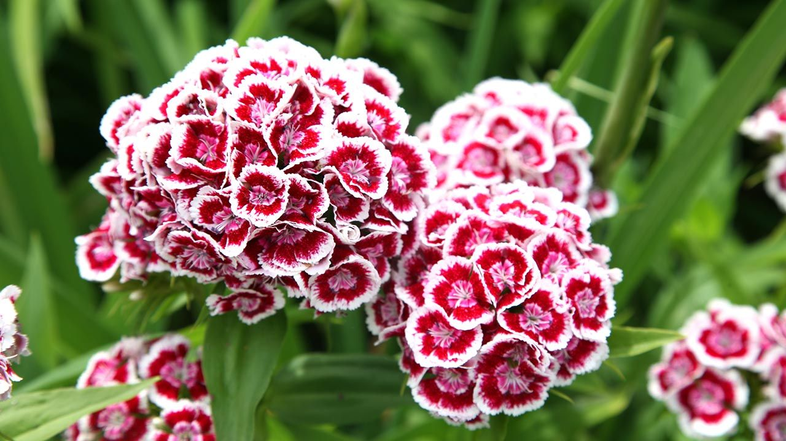
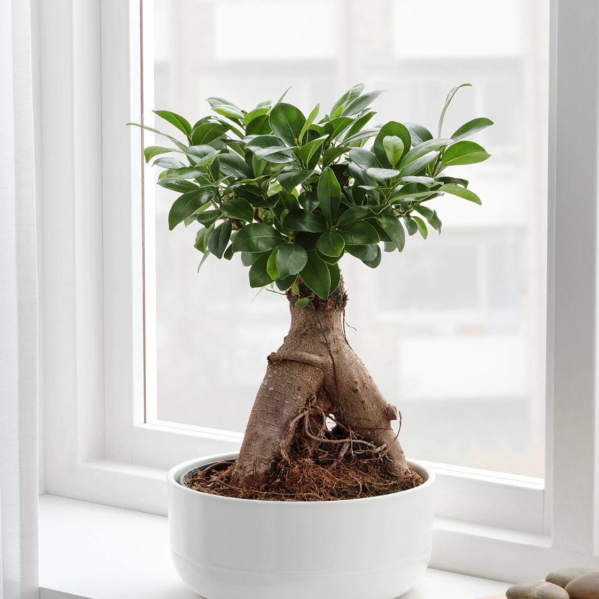
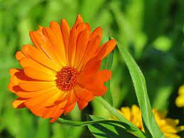

es una planta herbácea perteneciente a la familia de las Caryophyllaceae (Dianthus caryophyllus), de 1 m de altura con hojas angostas, opuestas y envainadoras y flores vistosas.
 es una planta que proviene de bosques tropicales. Sus ramas son grandes y arqueadas, y sus hojas bastante puntiagudas lo que añade un toque de 'jungla' tropical a la casa. Además, uno de los motivos de su éxito en decoración es que se puede incluir en el interior.
 hierba anual o bianual de 30 - 50 cm de altura, con vello fino y suave. Hojas en forma de espátulas, de 5 - 10 cm de longitud, de bordes lisos o ligeramente dentados. Capítulos terminales simples, amarillo-anaranjadas, de 5 - 10 cm de diámetro. Fruto pequeño, seco y algo espinoso.
 es una planta de exterior que se caracteriza por sus flores agrupadas en racimos. Cuenta con colores muy variados que van desde el morado, pasando por el amarillo, el rosa y hasta el naranja.
es una planta de exterior que se caracteriza por sus flores agrupadas en racimos. Cuenta con colores muy variados que van desde el morado, pasando por el amarillo, el rosa y hasta el naranja.